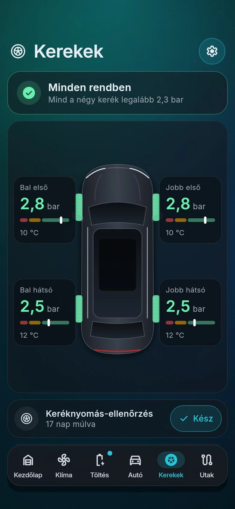
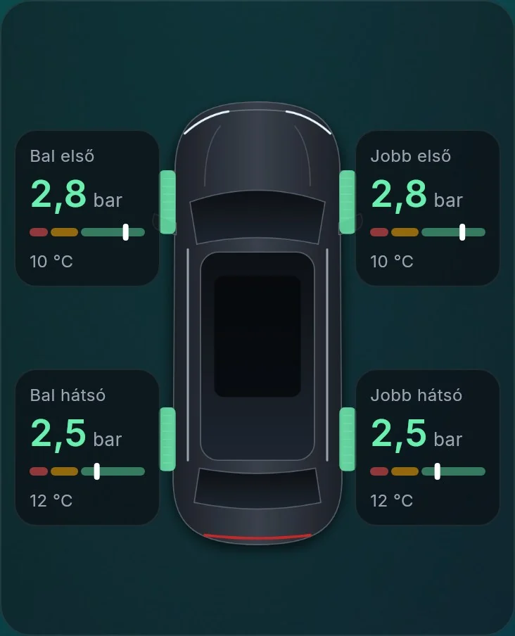
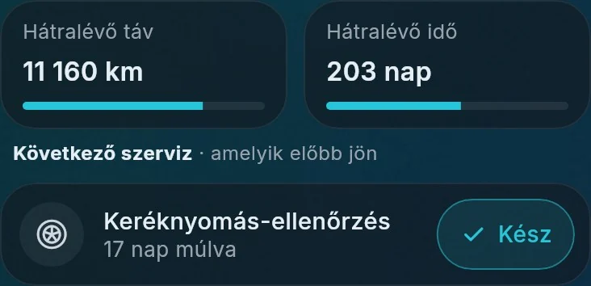
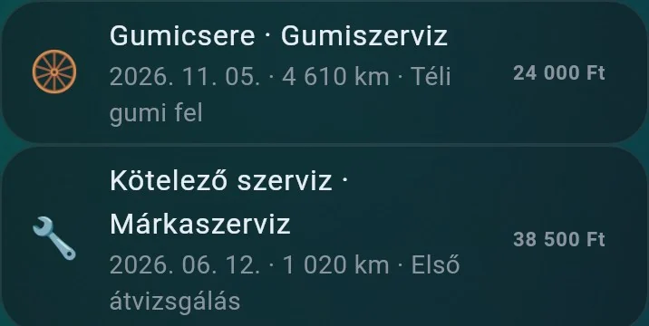
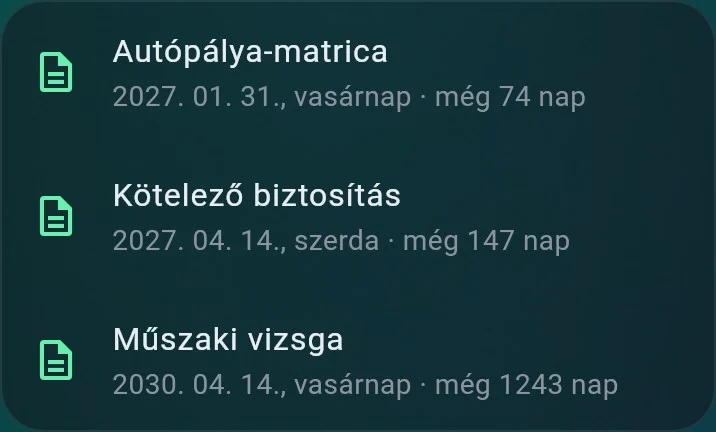

Gumik, szerviz, dokumentumok
Semmi nem marad ki, ami az autódat illeti.
Keréknyomás, következő szerviz, matrica, műszaki és biztosítás – a Carmeo számon tartja a dátumokat, és időben szól.


Keréknyomás, kerékről kerékre.
Nyomás és hőmérséklet minden keréknél, figyelmeztetéssel az általad beállított határ alatt. Rendszeres emlékeztető szól, amikor ideje a kútnál is ellenőrizni.


A következő szerviz – kilométer vagy dátum szerint.
A Carmeo visszaszámol a következő szervizig, amelyik előbb jön. A szerviznapló megőriz minden szervizt, gumicserét és javítást a költségével együtt, és CSV-be vagy PDF-be exportálja, ha eladod az autót.

Dokumentumok és határidők.
Autópálya-matrica, biztosítás, műszaki: egyszer megadod a lejáratot, látod a hátralévő napokat, és emlékeztetőt kapsz, mielőtt lejár.
Próbáld ki a saját autódon.
A Carmeo ingyenes. Csatlakozz a nyílt tesztcsoporthoz iPhone-on vagy Androidon.